结论四：焦半径公式
Abstract
焦半径公式是快速计算焦点弦和焦半径长度的二级结论，在双曲线、椭圆和抛物线中有类似的形式进行表示，一般情况下我们只需记住最基本的焦半径公式就能更快地得到焦点弦和焦半径长度。
可以说掌握了这套公式，就是拿下了很多中档题乃至难题。
一、结论描述
Note
焦半径指的是圆锥曲线上一点与其焦点所连的线段。
1.椭圆
1.1 倾斜角式
如图，在椭圆\(\frac{x^2}{a^2} + \frac{y^2}{b^2} = 1 (a>b>0)\)中，过右焦点\(F_2\)作倾斜角为\(\theta \)的直线交椭圆于\(A\)和\(B\)，则\(AF_2 = \frac{b^2}{a+c\cos \theta } \)，\(BF_2 = \frac{b^2}{a-c\cos \theta } \) 。
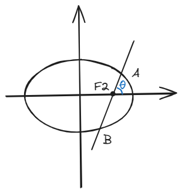
如图，在椭圆\(\frac{x^2}{b^2} + \frac{y^2}{a^2} = 1 (a>b>0)\)中，过下焦点\(F_2\)作倾斜角为\(\theta \)的直线交椭圆于\(A\)和\(B\)，则\(AF_2 = \frac{b^2}{a+c\sin \theta } \)，\(BF_2 = \frac{b^2}{a-c\sin \theta } \) 。
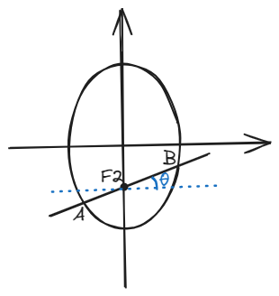
\(F_1\)的焦半径长度情况应由对称性质轻易得到。
1.2 坐标式
Tip
记忆方法1：脑海里想想谁更长/短，然后把这俩值里面大/小的带进去。
记忆方法2：左加右减，上减下加，这和我们的平移规律是一样的。
如图，在椭圆\(\frac{x^2}{a^2} + \frac{y^2}{b^2} = 1 (a>b>0)\)中，\(P(x_0,y_0) \)为椭圆上一点，\(F_1 \)和\(F_2 \)分别为左、右焦点，则\(PF_1 = a+ex_0\)，\(PF_2 = a-ex_0 \)，其中\(e\)为离心率。
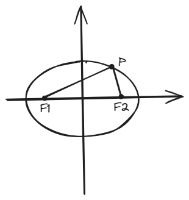
如图，在椭圆\(\frac{x^2}{b^2} + \frac{y^2}{a^2} = 1 (a>b>0)\)中，\(P(x_0,y_0) \)为椭圆上一点，\(F_1 \)和\(F_2 \)分别为上、下焦点，则\(PF_1 = a-ey_0\)，\(PF_2 = a+ey_0 \)，其中\(e\)为离心率。
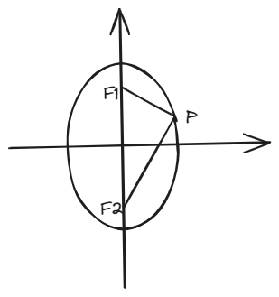
2.双曲线
2.1 倾斜角式
如图，在双曲线\(\frac{x^2}{a^2} - \frac{y^2}{b^2} = 1\)中，过右焦点\(F_2\)作倾斜角为\(\theta \)的直线交椭圆于\(A\)和\(B\)，则\(AF_2 = \frac{b^2}{|a-c\cos \theta| } \)，\(BF_2 = \frac{b^2}{a+c\cos \theta } \) 。
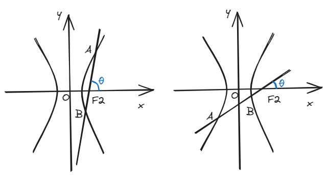
如图，在双曲线\(\frac{y^2}{a^2} - \frac{x^2}{b^2} = 1\)中，过下焦点\(F_2\)作倾斜角为\(\theta \)的直线交椭圆于\(A\)和\(B\)，则\(AF_2 = \frac{b^2}{|a-c\sin \theta| } \)，\(BF_2 = \frac{b^2}{a+c\sin \theta } \) 。
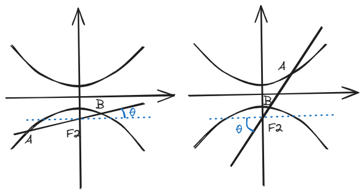
\(F_1\)的焦半径长度情况应由对称性质轻易得到。
2.2 坐标式
如图，在双曲线\(\frac{x^2}{a^2} - \frac{y^2}{b^2} = 1 \)中，\(P(x_0,y_0) \)为双曲线上一点，\(F_1 \)和\(F_2 \)分别为左、右焦点，则\(PF_1 = |a+ex_0|\)，\(PF_2 = |a-ex_0| \)，其中\(e\)为离心率。
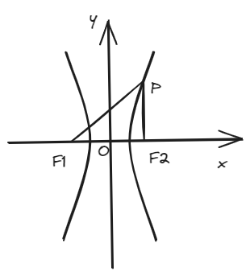
如图，在双曲线\(\frac{y^2}{a^2} - \frac{x^2}{b^2} = 1 \)中，\(P(x_0,y_0) \)为双曲线上一点，\(F_1 \)和\(F_2 \)分别为上、下焦点，则\(PF_1 = |a-ey_0|\)，\(PF_2 = |a+ey_0| \)，其中\(e\)为离心率。
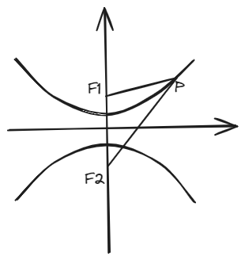
3.抛物线
3.1 倾斜角式
如图，在抛物线\(y^2 = 2px (p>0)\)中，过焦点\(F \)作倾斜角为\(\theta \)的直线分别与抛物线上、下相交于\(A \)和\(B \)两点，则\(AF = \frac{p}{1-\cos \theta } \)，\(BF = \frac{p}{1+\cos \theta} \)；在抛物线\(y^2 = -2px (p>0)\)中，过焦点\(F \)作倾斜角为\(\theta \)的直线分别与抛物线上、下相交于\(A \)和\(B \)两点，则\(AF = \frac{p}{1+\cos \theta } \)，\(BF = \frac{p}{1-\cos \theta} \)。
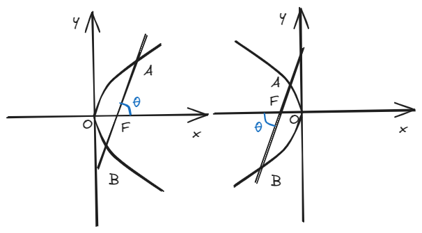
如图，在抛物线\(x^2 = 2py (p>0)\)中，过焦点\(F \)作倾斜角为\(\theta \)的直线分别与抛物线上、下相交于\(A \)和\(B \)两点，则\(AF = \frac{p}{1-\sin \theta } \)，\(BF = \frac{p}{1+\sin \theta} \)；在抛物线\(y^2 = -2px (p>0)\)中，过焦点\(F \)作倾斜角为\(\theta \)的直线分别与抛物线上、下相交于\(A \)和\(B \)两点，则\(AF = \frac{p}{1+\sin \theta } \)，\(BF = \frac{p}{1-\sin \theta} \)。
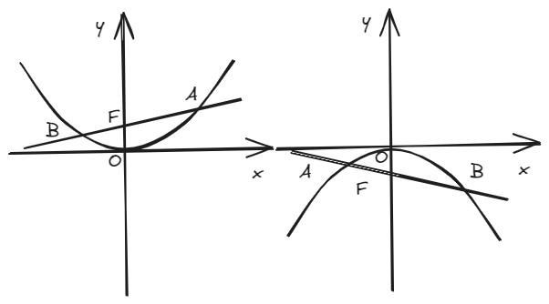
3.2 坐标式
\(A\)为抛物线上一点，其焦半径为\(AF \)，长度关系如下：
焦点在x轴上时，\(AF = \frac{p}{2} + |x_A|\)
焦点在y轴上时，\(AF = \frac{p}{2} + |y_A|\)
二、结论证明
这里就以焦点在x轴上的椭圆的倾斜角式和坐标式为例。
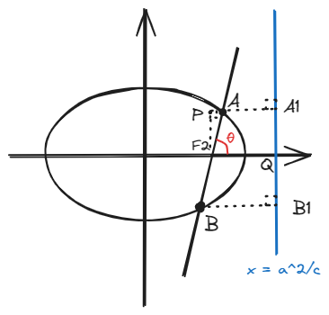
下证倾斜角式。
由几何关系：
由准线和离心率的性质：
那么就可以用\((2) \)和\((3) \)式，把\((1) \)式中\(PA\)和\(AA_1\)换成\(AF_2\)，也就是我们的焦半径：
又由坐标关系：
最后\((4) \)式和\((5) \)式结合得到：
化简即可得到：
其他情况不再赘述，思路类似。
下证坐标式。
由\((3) \)式可知：
化简即可得到：
其他情况类似，尤其是抛物线，实际上就是定义延伸出来的情况。
三、例题
(2017·全国I卷)已知\(F\)为抛物线\(C: y^2 = 4x \)的焦点,过\( F \)作两条互相垂直的直线\(l_1\),\(l_2\), 直线\( l_1 \)与\( C \)交于\( A\)、\(B \)两点,直线\( l_2 \)与\( C \)交于 D、E 两点,则\(|AB|\)+\(|DE|\)的最小值为\(\_\_\_\_\_\_ \)。
(2019·全国I卷)已知椭圆C的焦点\( F_{1} (-1,0) \)，\( F_{2} (1,0) \)，过\( F_{2} \)的直线与C交于A，B两点。若\( |AF_{2}| = 2|F_{2}B| \)，\( |AB| = |BF_{1}| \)，则C的方程为\( \_\_\_\_\_\_\) 。
四、拓展结论
Tip
以下结论（部分请自行推导）均源自以上公式，记性不好的话记住上面的够用了，考试临场用上面已知的能够推出下面的就行。
结论1：焦点弦长度公式： 在上面各种圆锥曲线的倾斜角式的例图中，\(|AB| = \_\_\_\_\_\_ \)
结论2：焦半径的长度倒数和： 在上面各种圆锥曲线的倾斜角式的例图中，\(\frac{1}{|AF|} + \frac{1}{|BF|} = \_\_\_\_\_\_ \)
结论3：互相垂直的两条焦点弦的长度倒数和： \(AB\)和\(CD\)为互相垂直的两条焦点弦，在椭圆和抛物线中，满足：\(\frac{1}{|AB|} + \frac{1}{|CD|} = |\frac{2-e^2}{2ep} |\)；在双曲线中，左图满足\(\frac{1}{|AB|} + \frac{1}{|CD|} = |\frac{2-e^2}{2ep} |\)，右图满足\(-\frac{1}{|AB|} + \frac{1}{|CD|} = |\frac{2-e^2}{2ep} |\)，其中p称为焦准距，满足\(p=\frac{b^2}{c} \)。
Note
焦点到准线的距离称为焦准距。
这里你不妨试试用a、b和c表示一下焦准距，看看是不是满足\(p=\frac{b^2}{c} \)。
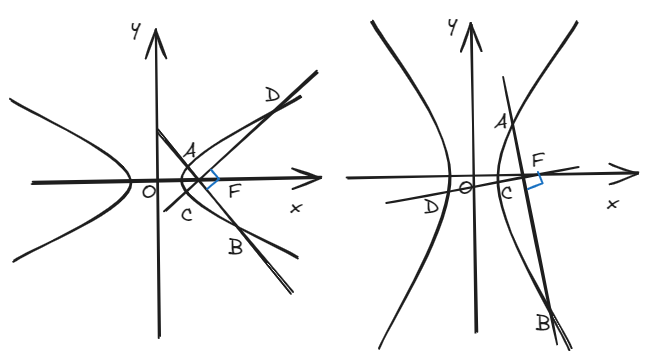
结论4：焦点弦长度的最小值： \(|AB|_{min} = min \{\frac{2b^2}{a},2a \} \)